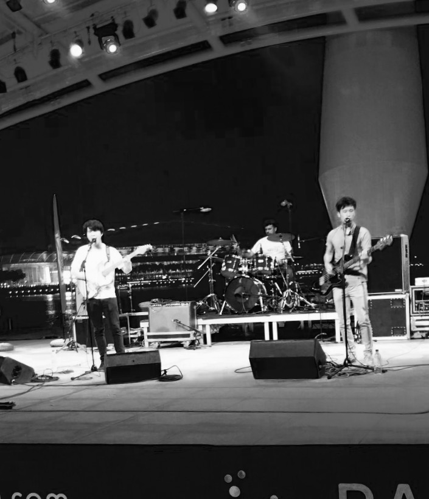

Velvet Revolver - Slither (Cover)
Luther music recently had an awesome sale, and I managed to plunder for cheap a sweet audio interface, the TASCAM US-2000, and an entry-level drum recording 4-piece mic set, Shure's PGDMK4. So the natural thing was to head down to a studio and test the quality. Not too disappointed with the results!
Acknowledgements: Shuiyong, for the guitars, and help to setup and tear-down the recording gear.
Setup:
- TASCAM US-2000 USB audio interface (16-channel inputs, 4-channel outputs)
- Shure PGDMK4 4-piece drum mic set (3 x snare/tom mics, 1 x bass drum mic)
- Generic/cheap studio microphone as an overhead (this + crappy cymbals is the reason why the crashes sounded so bad!)
- Reaper Digital Audio Workstation
Yo Highness
Lately, I've been sessioning as a drummer for a friend, Shen, in his band Yo Highness. I wouldn't be part of this if I didn't think he was a talented local singer/songwriter. How do we sound? ..well, he describes it best:
Yo Highness is noisy faux-jazzy poppy punky rock stuffed into bite-sized chunks made for the consumption of the ADD generation and anyone else who likes things sometimes sweet, sometimes salty and very bitter.
Do have a listen and check out/like our facebook page  , and the bandcamp page .
, and the bandcamp page .
Check out a couple of the demos of the songs:
, and my personal favorite, Terribles.
Work is still pretty much in progress, watch our facebook page for updates!
UPDATE: We recently played a gig at Esplanade Waterfront open theatre, as part of the NOISE mentorship showcase. Shoutout to all the folks and mentors behind NOISE Singapore, and a special thanks to our mentors Eddino and Daniel for their invaluable feedback. Here's a photo of us from the gig:
Desires
So in the autumn term of my second year at Imperial College London (2011), I decided to explore the world of electronic music production by enrolling in Music Technology Night Classes . I wasn't particularly interested in electronic music back then -- it all looked and sounded easy to play:
Step 1: Choose a bunch of effectsWell, turned out it isn't that simple, and it does require creativity and hardwork, just like any other genre. Electronic music has such a huge palette of sounds to choose from, it is exhilarating and terrifying at the same time. In conventional rock/metal/progressive/etc band setups, there is a limited set of sounds for musicians to work with, and as much as I love rock/metal/progressive/etc, electronic music has sonically more to offer in my opinion.
Step 2: Find some sample grooves
Step 3: Add a layer or twenty of effects
Step 4: Hit play.
Anyways, I took a non-credit evening class for 3-months at Imperial where we were taught music production techniques like sampling and mastering tracks. We used Cubase LE5 as our Digital Audio Workstation (DAW), and Reason as an effects-box + drum groove builder. We used a 49-key MIDI keyboard to record live tracks, and a simple 4-channel mixer to feed and monitor audio input into the computer. All in all, it was a pretty new experience for me, and quite a challenge to think outside guitars + bass + acoustic drum paradigm.
Although neither mandatory nor graded, I did end up producing my very first electronic track at the end of the course. I named it "Desires", simply because it has a very spacey-feel to it, and its production symbolizes my desire to pursue this new hobby further. I've been told on a couple of occasions that it sounds like music for a car advertisment -- desire is an appropriate theme after all! Anyway, here it is: